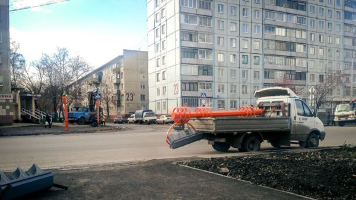

Часто пишу, что мне нравится развитие организации дорожного движения в Кемерове.
Последняя тенденция — выпиливание на новых светофорах жёлтого света. Вместо него внедрение короткого цикла, когда во все направления горит красный.

Ещё одно нововведение, которое не может не радовать автомобилистов, сокращение времени работы зелёного сигнала светофора для пешеходов. Так, на перекрёстке Ленина-Ворошилова, при повороте на Ворошилова зёленый сигнал горит пешеходам всего секунд 20. Улица узкая, и за это время её спокойно переходят все пешеходы. После этого пешеходам загорается красный, а автомобили спокойно поворачивают с Ленина на Ворошилова.
Организация дорожного движения — одна из тех отраслей в нашем городе, которой по праву можно гордиться.